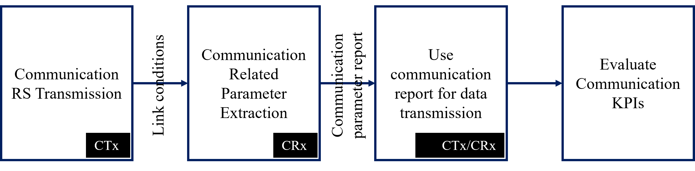
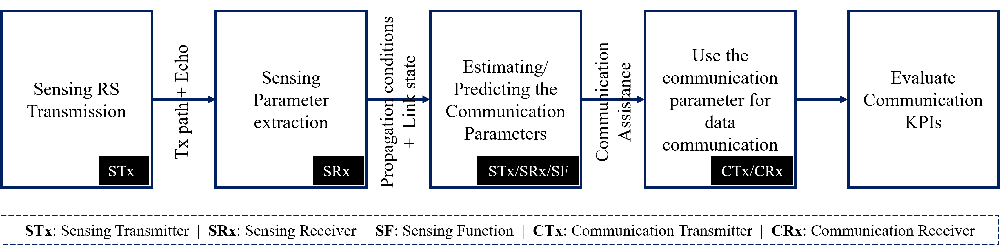

Sensing Assisted Communication for ISAC
Motivation
The central promise of Integrated Sensing and Communication (ISAC) is not merely the coexistence of radar-like sensing and data communication on a shared spectrum, but the mutual enhancement of one functionality by the other. Sensing-assisted communication (SAC) is the paradigm in which information extracted by the sensing subsystem, such as target positions, velocities, angles, environmental geometry, is fed back into the communication subsystem to improve its performance in terms of throughput, latency, reliability, overhead, and energy efficiency.
In conventional 5G NR, the communication subsystem operates in a largely self-contained loop:
the gNB transmits reference signals,
the UE measures the channel, compresses the measurement into a codebook-based report, and
feeds it back to the gNB
gNB then decides on precoding, scheduling, power control, and mobility actions.
{kind=link}

Every step in this loop costs overhead (reference signal resources, UE processing, uplink feedback capacity, decision latency). Sensing-assisted communication short-circuits parts of this loop by providing the gNB with direct, real-time physical-layer knowledge about the propagation environment and the targets within it. This sensing information not only allows the gNB to estimate the information required for communication at the moment but also gives it predictive insight into how the channel will evolve, enabling proactive adaptation rather than reactive response.
{kind=link}

System Model
Consider a monostatic ISAC base station (gNB) equipped with a uniform planar array (UPA) of \(N_t = N_h \times N_v\) transmit antennas and \(N_r\) receive antennas (or shared Tx/Rx via a circulator). The gNB serves \(K\) communication users while simultaneously sensing \(L\) targets in the environment.
Signal Model
At OFDM symbol \(m\) and subcarrier \(n\), the gNB transmits:
where:
\(\mathbf{W}_c \in \mathbb{C}^{N_t \times K}\) is the communication precoding matrix
\(\mathbf{s}_c \in \mathbb{C}^{K \times 1}\) is the vector of data symbols for \(K\) users
\(\mathbf{W}_s \in \mathbb{C}^{N_t \times 1}\) is the sensing beamforming vector
\(\mathbf{s}_s \in \mathbb{C}\) is the sensing waveform symbol
In a dual-function ISAC waveform, \(\mathbf{W}_s\) and \(\mathbf{s}_s\) may be absorbed into the communication signal itself (i.e., the data signal doubles as the sensing probe), in which case:
and the gNB uses its knowledge of \(\mathbf{s}\) (since it generated the signal) to perform matched filtering on the received echo.
Sensing Echo Model
The echo received at the gNB from \(L\) point targets is:
where for the \(l\)-th target:
Symbol |
Name |
Description |
|---|---|---|
\(\alpha_l\) |
Complex reflectivity |
Radar cross-section and propagation attenuation |
\(\tau_l\) |
Round-trip delay |
\(= 2R_l / c\), where \(R_l\) is target range |
\(\nu_l\) |
Doppler shift |
\(= 2v_l f_c / c\), where \(v_l\) is radial velocity |
\(\theta_l, \phi_l\) |
Azimuth, elevation |
Angular position of the target |
\(\mathbf{a}_t, \mathbf{a}_r\) |
Steering vectors |
Transmit and receive array response vectors |
\(\Delta f\) |
Subcarrier spacing |
OFDM subcarrier spacing |
\(T_s\) |
OFDM symbol duration |
Including cyclic prefix |
\(\mathbf{z}\) |
Noise |
Additive white Gaussian noise |
From the echo \(\mathbf{y}_s\), the sensing subsystem extracts the parameter tuple \(\{\alpha_l, \tau_l, \nu_l, \theta_l, \phi_l\}_{l=1}^{L}\) using matched filtering, 2D-DFT, MUSIC, ESPRIT, or other super-resolution algorithms. These parameters are then transformed into actionable communication-side information.
Sensing-to-Communication Information Flow
The extracted sensing parameters are not used directly by the communication subsystem. An intermediate parameter-to-action mapping layer translates raw sensing outputs into communication control inputs. The mapping is specific to each communication function:
Sensing Parameter to Communication Action Mapping
┌──────────────────────────────────────────────────────────────────────────┐
│ │
│ Sensing Parameter Communication Action │
│ ───────────────── ────────────────────── │
│ │
│ AoA / AoD (θ, φ) ──────▶ Beam selection / Precoder design │
│ ──────▶ Spatial interference nulling │
│ ──────▶ MU-MIMO user pairing │
│ │
│ Range (R = cτ/2) ──────▶ Path loss estimation → Power control │
│ ──────▶ Timing advance prediction │
│ ──────▶ Handover preparation trigger │
│ │
│ Doppler (ν) ──────▶ Channel aging compensation │
│ ──────▶ Velocity-aware MCS / DRX adaptation │
│ ──────▶ Mobility state estimation │
│ │
│ Reflectivity (α) ──────▶ Target detection / presence awareness │
│ ──────▶ Blockage prediction │
│ ──────▶ Wake-up / sleep decisions │
│ │
│ Environment Map ──────▶ Location-aware scheduling │
│ (aggregate) ──────▶ Interference map → Freq. planning │
│ ──────▶ NLOS localization via multipath │
│ │
└──────────────────────────────────────────────────────────────────────────┘
Taxonomy of Sensing-Assisted Communication
Sensing-assisted communication spans multiple layers of the protocol stack and addresses distinct communication functions. The taxonomy below organizes the SAC topics by the communication subsystem they enhance:
Taxonomy of Sensing-Assisted Communication
┌──────────────────────────────────────────────────────────────────────────┐
│ │
│ Sensing-Assisted Communication │
│ │ │
│ ┌───────────────────┼───────────────────┐ │
│ │ │ │ │
│ PHY Layer MAC / RRM RRC / Higher │
│ │ │ │ │
│ ┌──────┴──────┐ ┌──────┴──────┐ ┌───────┴───────┐ │
│ │Beamforming │ │Resource │ │Mobility │ │
│ │Channel Est. │ │ Allocation │ │ Management │ │
│ │CSI Acquis. │ │Power Control│ │Localization │ │
│ │Interference │ │Power Saving │ │ │ │
│ │ Management │ │ │ │ │ │
│ └─────────────┘ └─────────────┘ └───────────────┘ │
│ │
│ PHY-layer topics rely on fine-grained sensing parameters (AoA, │
│ delay, Doppler) at symbol/slot timescale. │
│ │
│ MAC/RRM topics use aggregated sensing info (environment map, │
│ presence/absence, velocity class) at scheduling timescale. │
│ │
│ RRC/Higher topics use trajectory-level sensing (position history, │
│ predicted path) at second-level timescale. │
│ │
└──────────────────────────────────────────────────────────────────────────┘
Performance Bounds and Fundamental Limits
Understanding the potential gains from sensing-assisted communication requires analyzing the information-theoretic and estimation-theoretic limits.
Cramér-Rao Bound for Sensing Parameters
The accuracy of sensing parameter estimation is bounded by the Cramér-Rao Lower Bound (CRLB). For a single target with parameter vector \(\boldsymbol{\eta} = [\tau, \nu, \theta]^T\), the Fisher Information Matrix (FIM) is:
where \(\boldsymbol{\mu}[m,n]\) is the noise-free echo signal and \(\sigma^2\) is the noise variance. The CRLB for each parameter is:
The key dependencies are:
Parameter |
CRLB scales as |
Implication for SAC |
|---|---|---|
Range \(R\) |
\(\propto 1 / (B^2 \cdot \text{SNR})\) |
Wider bandwidth → better range → better path loss / TA estimation |
Velocity \(v\) |
\(\propto 1 / (T_{\text{obs}}^2 \cdot \text{SNR})\) |
Longer observation → better Doppler → better mobility / CSI prediction |
Angle \(\theta\) |
\(\propto 1 / (N_t^2 \cdot \text{SNR})\) |
More antennas → better AoA → better beamforming / localization |
Communication Rate Gain from Sensing Side-Information
When sensing provides side-information \(\mathbf{S}\) about the channel \(\mathbf{H}\), the achievable rate with imperfect CSI can be expressed as:
where \(\hat{\mathbf{H}}\) is the channel estimate. Sensing reduces the estimation error variance \(\sigma_e^2\), which reduces the rate loss term. Specifically:
Without sensing: \(\sigma_e^2 = \sigma_e^2(\text{pilot-only})\)
With sensing prior: \(\sigma_e^2 = \sigma_e^2(\text{pilot} + \text{sensing}) \leq \sigma_e^2(\text{pilot-only})\)
The rate gain \(\Delta R = R_{\text{with sensing}} - R_{\text{without}}\) is most significant when:
Pilot density is low (overhead-constrained regime).
Channel varies rapidly (high mobility / high Doppler).
The number of antennas is large (massive MIMO — codebook feedback is a bottleneck).
Overhead Reduction Analysis
Define the effective spectral efficiency as:
where \(\rho_{\text{pilot}}\) is the fraction of resources used for pilots and \(\rho_{\text{fb}}\) is the fraction used for feedback. Sensing-assisted communication reduces both:
Overhead Reduction from Sensing Assistance
┌──────────────────────────────────────────────────────────────────┐
│ │
│ Without Sensing: │
│ ┌────────────┬───────────┬────────────────────────────────┐ │
│ │ Pilots │ Feedback │ Data │ │
│ │ (ρ_pilot) │ (ρ_fb) │ R × (1 - ρ_pilot - ρ_fb) │ │
│ └────────────┴───────────┴────────────────────────────────┘ │
│ ├─── 15-20% overhead ───┤ │
│ │
│ With Sensing: │
│ ┌──────┬─────┬────────────────────────────────────────────┐ │
│ │Pilot │ FB │ Data │ │
│ │(less)│(less│ R' × (1 - ρ'_pilot - ρ'_fb) │ │
│ └──────┴─────┴────────────────────────────────────────────┘ │
│ ├─ 5-8% ─┤ │
│ │
│ Net gain: higher η_eff even if R' ≈ R, because overhead │
│ reduction dominates. │
│ │
└──────────────────────────────────────────────────────────────────┘
Sensing-Assisted Communication Protocol Architecture
Integrating sensing assistance into the 5G/6G protocol stack requires new interfaces and information elements. The architecture below shows where sensing information is injected into the communication protocol:
Protocol Stack Integration
┌──────────────────────────────────────────────────────────────────────────┐
│ │
│ ┌─────────────────────────────────────────────────────────────────┐ │
│ │ Application Layer │ │
│ │ Location services, environment awareness, V2X applications │ │
│ └────────────────────────────┬────────────────────────────────────┘ │
│ │ │
│ ┌────────────────────────────▼────────────────────────────────────┐ │
│ │ RRC Layer │ │
│ │ ● Sensing-triggered measurement config (events, reporting) │ │
│ │ ● Trajectory-based HO preparation │ │
│ │ ● Sensing-aware DRX / power saving config │ │
│ └────────────────────────────┬────────────────────────────────────┘ │
│ │ │
│ ┌────────────────────────────▼────────────────────────────────────┐ │
│ │ MAC / Scheduler │ │
│ │ ● Sensing-informed resource allocation │ │
│ │ ● Joint sensing-comm scheduling │ │
│ │ ● Velocity-aware MCS / HARQ adaptation │ │
│ │ ● Interference-aware frequency assignment │ │
│ └────────────────────────────┬────────────────────────────────────┘ │
│ │ │
│ ┌────────────────────────────▼────────────────────────────────────┐ │
│ │ PHY Layer │ │
│ │ ● Sensing-assisted beam management (P1/P2/P3) │ │
│ │ ● Sensing-aided channel estimation (parametric + pilot) │ │
│ │ ● Sensing-derived precoding │ │
│ │ ● Sensing-based interference nulling │ │
│ └────────────────────────────┬────────────────────────────────────┘ │
│ │ │
│ ┌────────────────────────────▼────────────────────────────────────┐ │
│ │ Sensing Processing Engine │ │
│ │ ● Echo signal processing (matched filter, 2D-DFT) │ │
│ │ ● Parameter extraction (τ, ν, θ, α) │ │
│ │ ● Target detection (CFAR) │ │
│ │ ● Tracking and prediction (Kalman filter) │ │
│ │ ● Environment mapping │ │
│ └─────────────────────────────────────────────────────────────────┘ │
│ │
└──────────────────────────────────────────────────────────────────────────┘
Timescale Hierarchy
Different SAC functions operate at different timescales, which determines the freshness and granularity of sensing information required:
Timescale |
Duration |
SAC Function |
Sensing Input |
|---|---|---|---|
Symbol / Slot |
0.0625–1 ms |
Beamforming, precoding, interference nulling |
AoA, AoD, Doppler (per-echo) |
Scheduling interval |
1–10 ms |
Resource allocation, power control, MCS |
Range, velocity, interference map |
Measurement period |
10–100 ms |
CSI acquisition, beam tracking |
Tracked target state (filtered) |
RRC timescale |
100 ms – seconds |
Mobility management, DRX adaptation |
Trajectory prediction, presence map |
Network planning |
Minutes – hours |
Carrier/cell sleep, antenna muting |
Aggregated occupancy statistics |
Sensing Quality Requirements for Communication Enhancement
Not all communication functions benefit equally from sensing, and each has different minimum sensing accuracy thresholds below which the assistance becomes unreliable or counterproductive:
Sensing Accuracy Requirements by SAC Function
┌─────────────────────────────────────────────────────────────────────────┐
│ │
│ SAC Function Angle Range Velocity │
│ ──────────── ───── ───── ──────── │
│ Beamforming (FR2) < 1° ── ── │
│ Beamforming (FR1) < 5° ── ── │
│ Channel estimation < 2° < 1 m < 0.5 m/s │
│ CSI prediction ── ── < 0.3 m/s │
│ Localization < 3° < 0.5 m ── │
│ Power control ── < 5 m ── │
│ Mobility management < 10° < 10 m < 2 m/s │
│ Power saving ── < 50 m ── (detect/miss) │
│ │
│ "──" = not critical for this function │
│ │
└─────────────────────────────────────────────────────────────────────────┘
These thresholds determine the minimum bandwidth, array size, and observation time required for the sensing subsystem to meaningfully assist each communication function.
3GPP Context and Standardization
Sensing-assisted communication is one of the three identified use-case categories in the 3GPP Rel-19 ISAC study item (RP-234069, WI 10.8.2), alongside communication-assisted sensing and joint design. The study item examines:
Channel model for ISAC: Extensions to 3GPP TR 38.901 for sensing-relevant parameters (RCS, clutter, bistatic geometry).
Sensing procedures: How sensing measurements are triggered, configured, and reported.
Sensing-communication interplay: How sensing results feed into existing communication procedures (beam management, CSI framework, mobility, power control).
The key architectural questions under study include:
Whether sensing results are exposed as a new information element in existing interfaces (F1, E1, Xn, NG) or require new dedicated interfaces.
Whether sensing-assisted communication operates within the existing UE-transparent framework (no UE changes) or requires UE-side awareness of sensing.
How to handle multi-gNB sensing cooperation for SAC functions that benefit from geometric diversity (localization, multi-static detection).
3GPP Functional Architecture for Sensing-Assisted Communication
┌──────────────────────────────────────────────────────────────────────────┐
│ │
│ ┌──────────┐ Xn (sensing info) ┌──────────┐ │
│ │ gNB 1 │◄────────────────────────▶│ gNB 2 │ │
│ │ │ │ │ │
│ │ ┌──────┐ │ │ ┌──────┐ │ │
│ │ │Sense │ │ │ │Sense │ │ │
│ │ │Proc. │ │ │ │Proc. │ │ │
│ │ └──┬───┘ │ │ └──┬───┘ │ │
│ │ │ │ │ │ │ │
│ │ ┌──▼───┐ │ NG-C/NG-U │ ┌──▼───┐ │ │
│ │ │Comm │ │◄────────────────┐ │ │Comm │ │ │
│ │ │Stack │ │ │ │ │Stack │ │ │
│ │ └──────┘ │ │ │ └──────┘ │ │
│ └──────────┘ │ └──────────┘ │
│ │ │
│ ┌──────▼──────┐ │
│ │ 5GC / AMF │ │
│ │ Sensing │ │
│ │ Function │ │
│ │ (new NF?) │ │
│ └─────────────┘ │
│ │
└──────────────────────────────────────────────────────────────────────────┘
Open Research Directions
Several fundamental research questions remain open in sensing-assisted communication:
Optimal sensing-communication trade-off: Given finite resources (bandwidth, power, time), how should the system balance sensing quality against communication throughput? The Pareto frontier of this trade-off is still poorly understood for practical waveforms and channel models.
Learning-based SAC: Can deep learning replace the explicit parameter-to-action mapping? End-to-end learning from raw sensing echoes to communication decisions (beam, precoder, schedule) may outperform model-based approaches in complex environments.
Sensing under mobility: When both the gNB and targets are mobile (e.g., V2X sidelink ISAC), the sensing-communication channel coupling becomes more complex, and new signal processing frameworks are needed.
Privacy and security: Sensing reveals physical information about users and the environment. How should this information be protected? Can sensing-assisted communication operate with anonymized or aggregated sensing data without losing its benefits?
Multi-operator ISAC: When multiple operators share spectrum (e.g., in unlicensed or shared bands), sensing echoes from one operator’s signal may be exploited (or interfered with) by another. Cooperative and adversarial multi-operator SAC is an emerging topic.
Detailed Topics:
- Sensing Assisted Beamforming for ISAC
- Sensing Assisted Channel Estimation for ISAC
- Sensing Assisted CSI Acquisition for ISAC
- Sensing Assisted Resource Allocation for ISAC
- Sensing Assisted Mobility Management for ISAC
- Sensing Assisted Interference Management for ISAC
- Sensing Assisted Localization for ISAC
- Sensing Assisted Power Control for ISAC
- Sensing Assisted Power Saving